Manual de marca ROGLE
Reengineering Operations GroupWork Logistics Excellence
La marca
ROGLE es un grupo de investigación del Departamento de Organización de Empresas de la Universitat Politècnica de València. Investiga la reingeniería de operaciones y la logística, y trabaja en equipo.
La web del grupo es https://rogle.webs.upv.es/.
Desde el 1 de octubre de 2026 el grupo usa la alternativa A del 20 aniversario. La UPV aún no la ha aprobado. A necesita el visto bueno del Área de Comunicación de la UPV (imagen@upv.es), y por eso el repositorio sigue privado. Si no se aprueba, el grupo puede volver a C o a B con un comando (ver Cambiar de alternativa). El seguimiento está en el epic #13.
Idea
- En valenciano, rogle es el corro de personas. «Fer rogle» es reunirse en círculo.
- El isotipo muestra cinco personas en corro. Cada una abraza al grupo con una media luna.
- Las medias lunas giran. Expresan dos ideas del nombre: el trabajo en grupo (GroupWork) y el ciclo continuo de mejora de las operaciones (Reengineering Operations).
- Son cinco personas. El grupo crece.
Este manual fija cómo usar el logotipo, los colores y la tipografía. Los logotipos vigentes están en brand/logos/ y los valores en el _brand.yml de la raíz. La especificación completa está en rediseno-20/BRAND_SPEC.md.
Logotipos
La marca tiene tres versiones. Comparten el isotipo y la tipografía. Las imágenes de esta sección son los archivos de brand/logos/: cambian solas si cambia la alternativa vigente.
 Principal. Isotipo a la izquierda y descriptor bajo el nombre. Es la versión por defecto.
Principal. Isotipo a la izquierda y descriptor bajo el nombre. Es la versión por defecto.
 Integrado. El isotipo hace de «O». Para portadas, pósteres y cabeceras donde el nombre es protagonista.
Integrado. El isotipo hace de «O». Para portadas, pósteres y cabeceras donde el nombre es protagonista.
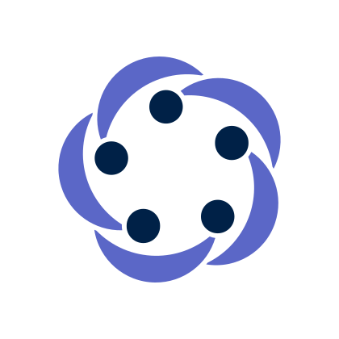
Isotipo. Para iconos, sellos y espacios cuadrados donde el nombre ya aparece cerca.Principal e integrado existen con descriptor y sin él (-notagline). Usa la versión sin descriptor cuando el descriptor ya aparezca en la página o la pieza sea pequeña. Con descriptor, el ancho mínimo es 60 mm o 320 px.
Variantes de color
| Variante | Archivo | Uso |
|---|---|---|
color |
rogle-<versión>-color |
Fondos blancos o claros. Primera opción |
reverse |
rogle-<versión>-reverse |
Fondos Oxford Blue u oscuros. Sin fondo propio |
black |
rogle-logo-black |
Impresión a una tinta, grabado y sellos. Solo el logotipo principal |

color: fondos blancos o claros.

reverse: fondos Oxford Blue u oscuros.

black: una tinta negra.
Sin descriptor, el logotipo principal y el integrado tienen las mismas variantes color y reverse.

rogle-logo-notagline-color

rogle-logo-notagline-reverse
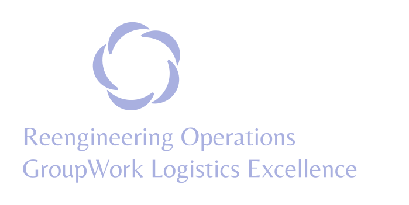
rogle-wordmark-reverse

rogle-symbol-reverse
La variante black es plana. Úsala solo cuando el color no sea posible. El degradado de las versiones digitales no se imprime.
Más versiones de la alternativa A
Estas piezas existen por alternativa. Aquí se muestra A. Con otra alternativa vigente, cambia A por B o C en el nombre de la carpeta y del archivo.
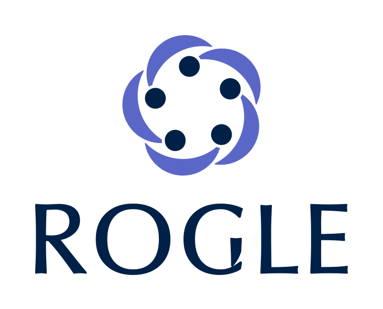
rogle-A-vertical: espacios estrechos o cuadrados.

rogle-A-horizontal-digital: solo en pantalla. Medias lunas con degradado.

rogle-A-horizontal-negativo-descriptor: portadas oscuras.
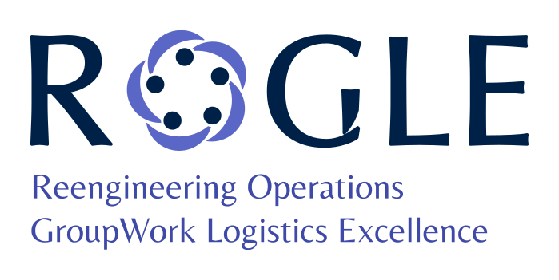
rogle-A-integrado-descriptor: el isotipo hace de «O».
El catálogo completo (trece versiones por alternativa, en SVG, PDF y PNG) está en rediseno-20/alternativa-A/, rediseno-20/pdf/ y rediseno-20/png/. La tabla de cada versión y su uso está en la especificación.
Isotipo y piezas comunes
Las tres alternativas comparten el mismo isotipo. Está en rediseno-20/comunes/.

rogle-isotipo: versión plana, para impresión y uso general.
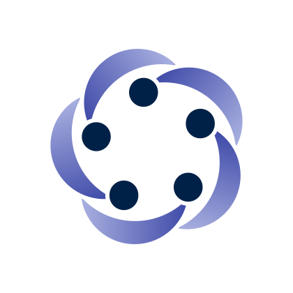
rogle-isotipo-digital: medias lunas con degradado. Solo en pantalla.
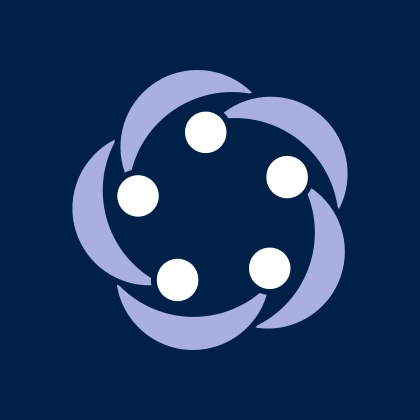
rogle-isotipo-negativo: sobre fondo Oxford Blue.

rogle-avatar: redes sociales y perfiles.
rogle-favicon: hasta 48 px. Se exporta a 16, 32 y 48 px.
Logotipos animados
Cada alternativa tiene cuatro animaciones, en GIF (800 px, en bucle) y MP4. Están en rediseno-20/animaciones/. Son para pantallas, presentaciones y redes.
- Giro: el isotipo gira en el centro, se coloca a la izquierda y el nombre aparece de izquierda a derecha.
- Común: el isotipo aparece con un pequeño rebote y el nombre entra desde la izquierda.
- Fer rogle: las cinco personas llegan y forman el corro, las medias lunas las abrazan, el corro gira una quinta parte y caen las letras.
- 20: un contador pasa de 2006 a 2026, se convierte en el «20» y aparece «SINCE 2006».
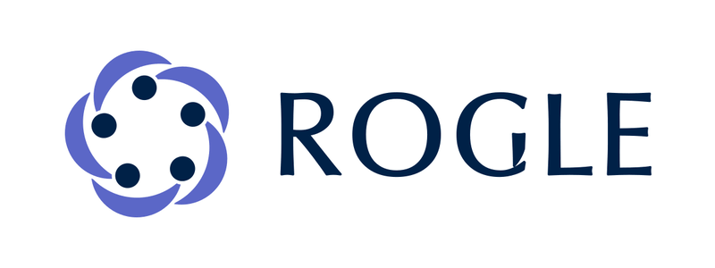
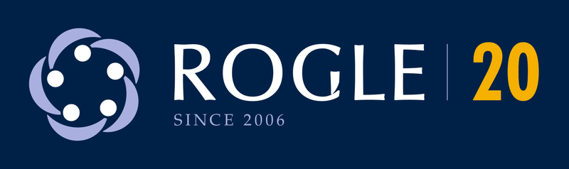
Área de protección y tamaño mínimo
- Alrededor de la marca se deja un espacio libre igual a 0,25 veces la altura del isotipo. Ningún texto, borde o imagen entra en ese margen.
- Isotipo: 16 px en pantalla y 5 mm impreso. Hasta 48 px se usa
rogle-favicon. - Horizontal: 160 px o 30 mm de ancho.
- Horizontal con descriptor: 320 px o 60 mm de ancho.
Usos incorrectos
- No deformes, gires ni inclines la marca.
- No cambies los colores ni el número de personas del isotipo.
- No añadas sombras, contornos, brillos ni otros efectos.
- No uses el degradado en impresión a una tinta.
- No cambies la separación entre isotipo y logotipo.
- No coloques la marca sobre fotografías o fondos con poco contraste.
- No uses el isotipo de la UPV ni su pictograma (Poli) dentro de la marca ROGLE.
Color
La paleta parte de Oxford Blue y de dos índigos. El ámbar es el único acento cálido y tiene una regla estricta. Los valores están en el _brand.yml de la raíz y en brand/latex/rogle-colors.sty.
Colores de marca
Colores de apoyo
Reglas de color:
- Oxford Blue e índigo nunca se tocan (2,11 : 1). El aire blanco del isotipo los separa.
- El ámbar no se usa sobre fondo claro (1,89 : 1).
- El degradado solo se usa en pantalla. En impresión se usa la versión plana.
Contraste y accesibilidad
La UPV exige al menos el nivel AA en todos sus canales.
| Combinación | Contraste |
|---|---|
| Oxford Blue sobre blanco | 16,05 : 1 |
| Índigo sobre blanco | 7,62 : 1 |
| Índigo medio sobre blanco | 4,99 : 1 |
| Gris UPV 431 sobre blanco | 5,80 : 1 |
| Índigo claro sobre Oxford Blue | 7,62 : 1 |
| Ámbar sobre Oxford Blue | 8,48 : 1 |
Tipografía
La marca usa Palatino para el texto y para todos los títulos, estos en negrita. Gill Sans queda solo para lo secundario: etiquetas, pies, cabeceras y numeración. La regla es la misma en documentos y presentaciones. Es el sistema de la marca personal de Alberto Lacort, que comparte esta paleta. Las fórmulas van en Pagella y el código en Consolas o Inconsolata. Decisión y fuentes: registro de decisión.
Excepción: la web usa Poppins e Inter, las fuentes web de la UPV. Poppins Bold va en los titulares e Inter en el texto, el menú y las etiquetas. Documentos y presentaciones siguen con Palatino y Gill Sans. Las fuentes web están en brand/fonts/poppins/ y brand/fonts/inter/, con su licencia SIL OFL 1.1.
Reingeniería de operaciones
Títulos en Palatino negrita
Etiquetas, pies y cabeceras en Gill Sans
El texto corrido va en Palatino. Las cursivas marcan términos técnicos. La utilización de un servidor es ρ = λ/μ.
quarto render muestra.qmd
| Uso | Fuente |
|---|---|
| Texto y todos los títulos (portada, sección, diapositiva), estos en negrita | Palatino |
| Texto secundario: etiquetas, pies de figura y de tabla, cabeceras de tabla, cabecera y pie de página, numeración, menú de seguimiento y metadatos de autoría | Gill Sans |
| Fórmulas | Pagella: newpxmath en LaTeX y mathjax-pagella en web; Cambria Math en Office |
| Código | Consolas en Office; Inconsolata en LaTeX y como respaldo web |
Cada medio toma la fuente del sistema. LaTeX y la web usan una fuente libre de respaldo si falta. Word y PowerPoint no tienen respaldo.
| Uso | Word y PowerPoint | LaTeX y Beamer | Web, HTML y Quarto |
|---|---|---|---|
| Texto | Palatino Linotype | Palatino del sistema; respaldo newpxtext |
Palatino del sistema; respaldo TeX Gyre Pagella |
| Títulos (negrita) | Palatino Linotype | Palatino del sistema; respaldo newpxtext |
Palatino del sistema; respaldo TeX Gyre Pagella |
| Texto secundario | Gill Sans MT | Gill Sans del sistema; respaldo gillius |
Gill Sans del sistema; respaldo Gillius ADF |
| Fórmulas | Cambria Math | newpxmath |
MathJax 4 con la fuente mathjax-pagella (HTML y Reveal.js) |
| Código | Consolas | inconsolata |
Consolas o Menlo; respaldo Inconsolata |
LaTeX toma Palatino y Gill Sans del sistema solo con LuaLaTeX o XeLaTeX. Con pdfLaTeX usa siempre los clones libres.
| Nivel | Documento | Diapositiva |
|---|---|---|
| Título de portada | — | 40 pt |
| Título de separador de sección | — | 36 pt |
| Título | 18 pt | 28 pt |
| Subtítulo | 14 pt | 24 pt |
| Texto | 11 pt | 18 pt |
| Pie de figura y notas | 9 pt | — |
| Pie de página | — | 12 pt |
En diapositivas, ningún texto baja de 18 pt salvo los pies de página y los créditos.
Cómo aplicarla:
- Quarto: el
_brand.ymlde la raíz ya define colores y tipografía.rediseno-20/muestra.qmdes un ejemplo completo. - Fórmulas en Quarto: añade
include-in-header: <ruta>/brand/rediseno-20/mathjax-pagella.htmly fija MathJax 4 enhtml-math-method, como hacemuestra.qmd. Reveal.js necesita el mismo ajuste, porque Quarto carga allí MathJax 2 por defecto. - Reveal.js: las fuentes libres de respaldo no llegan a las diapositivas. Allí se usan Palatino y Gill Sans del sistema. Los títulos van en Palatino negrita y Gill Sans solo aparece en lo secundario.
- LaTeX: carga
\usepackage{rogle20-fonts}desdebrand/latex/.\rogletitlefontda Palatino en negrita para los títulos;\sffamilyda Gill Sans para lo secundario. - Word y PowerPoint: Palatino Linotype para el texto y los títulos (en negrita) y Gill Sans MT solo para lo secundario (en PowerPoint: menú, etiquetas, fuente y pie; en Word: pies de figura, cabeceras y numeración). Office para Mac las incluye y PowerPoint las incrusta al exportar a PDF. En Windows falta comprobarlo.
- Fórmulas en Word y PowerPoint: usa Cambria Math. En equipos propios puedes instalar TeX Gyre Pagella Math (
brand/fonts/) y elegirla en las opciones de ecuación.
Las fuentes libres de respaldo están en brand/fonts/, cada una con su licencia. Gillius ADF no es un clon exacto: está inspirada en Gill Sans. Palatino, Gill Sans, Cambria y Consolas no se incluyen, porque son comerciales.
| Fuente | Licencia |
|---|---|
| TeX Gyre Pagella y TeX Gyre Pagella Math | GUST Font License |
| Gillius ADF | GPL 2 o posterior. Su README cita una excepción para fuentes, cuyo texto no se distribuye |
| Inconsolata | SIL Open Font License |
Las letras de la marca dependen de la alternativa y se entregan convertidas a trazados:
- Logotipo: letras UPV (A), geométrica a medida (B) o Palatino negrita (C).
- Descriptor: Belleza (A), Barlow Semi Condensed Medium (B) o Palatino (C). Belleza y Barlow tienen licencia OFL. C usa TeX Gyre Pagella, con licencia GUST.
- Firma institucional UPV: Futura Bold Condensed, como recomienda el anexo de la UPV para grupos. El anexo nombra Futura LT Pro. Los archivos usan la variante BT. Es una fuente comercial. Su licencia está pendiente (#24).
Convivencia con la UPV
ROGLE pertenece a la UPV. La jerarquía depende del tipo de documento.
- Documentos institucionales (actas, docencia oficial, RiuNet, memorias de proyecto): manda la marca UPV. ROGLE aparece como firma secundaria, a la derecha o en el pie.
- Materiales propios del grupo (web, pósteres, presentaciones, informes técnicos, redes): manda ROGLE. La UPV aparece como respaldo, más pequeña y separada por una línea vertical en color separador.
No mezcles las paletas en la misma pieza. Los colores UPV de _brand.yml (prefijo upv-) sirven solo para documentos institucionales.
Firma institucional
Los documentos oficiales siguen el anexo de la Guía de Comunicación de la UPV para grupos de investigación. La marca UPV va acompañada del nombre del grupo en Futura Bold Condensed y en Gris UPV 431.

upv-rogle-firma-institucional: marca UPV en negro.
upv-rogle-firma-institucional-negativo: marca UPV en negativo sobre el cuadrado gris.
Marca propia junto a la UPV
rogle-A-upv-convivencia: materiales propios junto a la marca UPV.
Cuando ROGLE aparece con su propia marca junto a la UPV (rogle-<X>-upv-convivencia, con <X> igual a A, B o C):
- La marca UPV va a la izquierda y ROGLE a su derecha.
- Ambas tienen la misma altura. El isotipo de ROGLE mide lo mismo que la tinta visible de la marca UPV, sin contar el aire de su lienzo. El bloque ROGLE (isotipo y logotipo) queda centrado en esa altura. ROGLE nunca es mayor que la marca UPV.
- Las separa una línea vertical en color separador, con al menos media altura de aire a cada lado. La línea mide lo mismo que la tinta de las dos marcas.
- La marca UPV no se modifica.
- El archivo deja 90 unidades de margen en los cuatro lados. Se miden sobre la tinta de la marca UPV, el separador y ROGLE, no sobre el lienzo de la marca UPV.
20 aniversario
ROGLE se creó en 2006. El 20 aniversario es en 2026. La marca lleva la cifra «20» en ámbar, solo sobre Oxford Blue. Se usa solo durante el año del aniversario. Después, la marca sigue igual, sin la cifra.
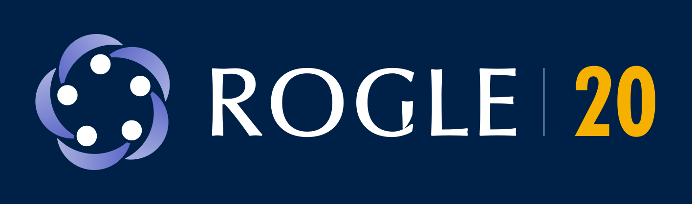
rogle-A-20-aniversario: solo en pantalla, porque lleva degradado.

rogle-A-20-since: «SINCE 2006». Medias lunas planas: se puede imprimir.
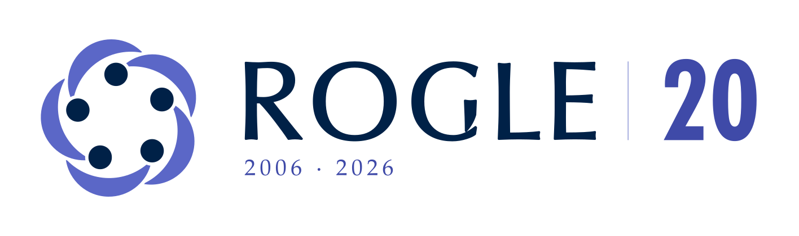
rogle-A-20-blanco: la cifra va en índigo, porque el ámbar no se usa sobre fondo claro.
Plantillas, vídeo y kit de imprenta
Las plantillas con la marca vigente están en rediseno-20/plantillas/. Cada carpeta tiene un README con los comandos y una muestra en PNG.
| Plantilla | Carpeta | Formato |
|---|---|---|
| Presentaciones | plantillas/presentaciones/ |
Quarto, Reveal.js y Beamer |
| Informe técnico y artículo | plantillas/informe/ |
Quarto a PDF con LuaLaTeX |
| Póster A0 | plantillas/poster/ |
Typst |
| Carta con membrete | plantillas/carta/ |
LaTeX |
| Word y PowerPoint | office/ |
Tema .thmx, ROGLE.potx (estilo consultora, con menú de secciones) y plantillas .dotx (preprint, documento de trabajo, margen ancho y carta) |
Estas plantillas cargan los logotipos de la alternativa A directamente. No cambian con brand/adoptar.sh. Las excepciones son las presentaciones y las de Word y PowerPoint (brand/office/), que siguen la alternativa vigente. Las de Word y PowerPoint se regeneran con python3 brand/office/build_all.py tras ejecutar brand/adoptar.sh. Las presentaciones, con python3 brand/rediseno-20/plantillas/presentaciones/build_logos.py. Los formatos de _extensions/ (prácticas, casos docentes y CITYM) usan los logotipos vigentes y se actualizan al cambiar de alternativa.
Vídeos de presentación de la marca, en rediseno-20/video/:
rogle-presentacion-marca-A.mp4: horizontal, 1920 × 1080, 75 segundos, con música de fondo.rogle-presentacion-marca-A-vertical.mp4: vertical, 1080 × 1920, para redes y móvil.
La música es una pieza original en estilo reel, sintetizada por rediseno-20/video/musica/build_musica.py: pop de baile a 128 pulsaciones por minuto en do mayor, con bombo a cuatro tiempos y efecto de bombeo, palmas, un gancho melódico de cuatro compases y una subida que desemboca en el «drop» justo cuando entra la escena del 20 aniversario. No es ninguna canción existente: las canciones que triunfan en redes tienen derechos de autor, y un vídeo institucional con ellas se silenciaría o se retiraría. La pieza es de dominio público (CC0). Para generar el vídeo sin música, --sin-musica. Los estilos anteriores siguen disponibles: build_musica.py valenciana y build_musica.py ambiental. Para usar un sonido de moda, publica la versión sin música y añade el audio desde la biblioteca de la propia red (Instagram, TikTok) al subirla.
Hay también versiones con locución (rogle-presentacion-marca-A-locucion.mp4 y -vertical-locucion.mp4): una voz de mujer explica cada escena y la música baja mientras habla. El guion está en rediseno-20/video/locucion/guion.md. La voz es neuronal (Piper, español de España, en local) y suena mucho más natural que la del sistema, pero sigue siendo sintética: para la versión definitiva, una persona del grupo graba cada intervención (escena-01.wav … escena-09.wav) y se vuelve a generar con uv run brand/rediseno-20/video/locucion/build_locucion.py, que usa las grabaciones si existen.
El kit para imprenta es un ZIP con todas las piezas en SVG, PDF, PDF CMYK, EPS, DXF y PNG, las animaciones y un LEEME. El de la alternativa A está en rediseno-20/kit-imprenta/ROGLE-20-aniversario-marca-A.zip. Para otra alternativa, ejecuta brand/rediseno-20/kit-imprenta/empaquetar.sh A,C (o B, ABC).
Sitio web
La web del grupo es https://rogle.webs.upv.es, en la web avanzada de la UPV. Es un sitio estático de Quarto, bilingüe (/es/ y /en/), con la alternativa vigente: cabecera con el logotipo horizontal, portada oscura con la cifra «20» en ámbar y pie con la convivencia UPV y ROGLE. Poppins va en los titulares e Inter en el resto (excepción web, véase «Tipografía»). Tiene tema claro y oscuro. No usa cookies ni recursos de otros dominios. La página Marca de la web ofrece todo para descargar: logotipos, paleta, plantillas, kit de imprenta, vídeos y este manual (en /marca/manual/). Cada miembro tiene un perfil y cada artículo una ficha con cita APA y BibTeX.
Las fuentes están en web/. uv run web/build_web.py genera los datos, las fuentes y las imágenes, y compila el sitio en web/_site/. uv run web/build_web.py deploy prepara el commit del sitio compilado para el repositorio de despliegue allabur/rogle-web, que Plesk descarga. Los pasos de Plesk y la lista de comprobación están en web/README.md.
Presentaciones
Reveal.js, Beamer y PowerPoint comparten un diseño de estilo consultora. La plantilla de Quarto (Reveal.js y Beamer) está en plantillas/presentaciones/ y la de PowerPoint en office/.
- Estilo. Fondo blanco, título de acción de una frase, menú de seguimiento de las secciones, barra de mensaje clave, línea de fuente y pie con número. La portada, la contraportada y los separadores van sobre Oxford Blue.
- Tipografía. Los títulos van en Palatino negrita y el cuerpo en Palatino. Gill Sans solo aparece en lo secundario: menú, etiquetas, fuente, pie, número, cabeceras de tabla y leyendas.
- Menú de seguimiento. Cinco variantes: lateral, superior, inferior, pasos (chevrones numerados) y ninguno. La sección actual va en índigo y las demás en gris. En Reveal.js y Beamer se elige con
tracker:en el YAML y se calcula a partir de los# Sección. - Portada. El diseño principal es un campo Oxford Blue con un filete ámbar y una franja blanca con los logotipos de la UPV y de ROGLE en positivo. La alternativa es toda Oxford Blue con los logotipos en blanco (
portada: negativa). - Color. El ámbar solo va sobre Oxford Blue.
Uso en proyectos
Quarto
Cualquier proyecto Quarto importa la marca con un comando:
quarto use brand allabur/rogleQuarto copia _brand.yml y los logotipos en _brand/. Aplica colores, tipografía y logotipo a HTML, Reveal.js, Dashboard y Typst sin configuración adicional. El repositorio es privado: necesitas acceso de lectura.
LaTeX
Copia brand/latex/rogle-colors.sty junto al documento y cárgalo con \usepackage{rogle-colors}. Los colores se llaman rogleOxfordBlue, rogleIndigo, rogleIndigoMedio, rogleIndigoClaro, rogleAmbar, etc. Usa los logotipos en PDF de brand/logos/. La tipografía está en brand/latex/rogle20-fonts.sty.
Office y otras herramientas
Usa los PNG de brand/logos/ (1200 px de ancho, fondo transparente). Introduce los colores con su código HEX. Para Word y PowerPoint hay tema, diapositivas y plantillas de documento listas en brand/office/ (ver su README).
Archivos
brand/
├── logos/ Logotipos vigentes. Los genera adoptar.sh
│ ├── logo/ Principal: rogle-logo[-notagline]-<variante>.{svg,pdf,png}
│ ├── wordmark/ Integrado: rogle-wordmark[-notagline]-<variante>.{svg,pdf,png}
│ └── symbol/ Isotipo: rogle-symbol-<variante>.{svg,pdf,png}
├── marca-activa.txt Alternativa vigente (A, B o C)
├── adoptar.sh Cambia de alternativa y regenera los logotipos
├── latex/
│ ├── rogle-colors.sty Colores de la marca (y los de la marca anterior, con prefijo roglevioleta)
│ └── rogle20-fonts.sty Tipografía de la marca
├── fonts/ Fuentes libres de respaldo, con su licencia
├── historial/violeta/ Marca anterior (violeta, Inter)
├── rediseno-20/ Alternativas, plantillas, vídeo, kit de imprenta y especificación
│ ├── BRAND_SPEC.md Especificación de la marca
│ ├── alternativa-A/ SVG de la alternativa A (vigente)
│ ├── alternativa-B/ SVG de la alternativa B
│ ├── alternativa-C/ SVG de la alternativa C (generados)
│ ├── comunes/ Isotipo, favicon, avatar y firma institucional UPV
│ ├── animaciones/ GIF y MP4 de las cuatro animaciones de A, B y C
│ ├── plantillas/ Presentaciones, informe, póster y carta
│ ├── video/ Vídeo de presentación (horizontal y vertical) y su generador
│ ├── kit-imprenta/ Generador (empaquetar.sh) y ZIP de la alternativa A
│ ├── pdf/ y png/ Exportaciones por carpeta
│ ├── muestra.qmd Documento de ejemplo con la marca
│ └── obsoleto/ Entrega anterior con Futura (solo historial)
├── build-logos.sh Exporta PDF y PNG de rediseno-20 (r20) o la marca anterior (actual)
└── index.qmd Este manualLos SVG y PDF tienen el texto convertido en trazos. No necesitan ninguna fuente instalada.
Cambiar de alternativa
La alternativa vigente se guarda en brand/marca-activa.txt. Para cambiarla, ejecuta desde la raíz del repositorio:
brand/adoptar.sh CEl script acepta A, B o C. Sin argumento, regenera la alternativa guardada. Necesita rsvg-convert y uv.
Qué cambia:
- Se regenera
brand/logos/(SVG, PDF y PNG), con los mismos nombres de rol:rogle-logo-color,rogle-symbol-reverse, etc. - Se actualizan los
rogle-logo.pngde las tres extensiones de_extensions/y deassets/. - Cambian solos el
_brand.yml, que apunta a esos nombres, y las imágenes de las secciones de logotipos de este manual.
Qué no cambia:
- La paleta, la tipografía y el isotipo, que son comunes a las tres alternativas.
- Las plantillas de
rediseno-20/plantillas/, que usan los logotipos de A. Para pasarlas a otra alternativa, sustituyerogle-A-porrogle-C-en sus rutas. - Las galerías «Más versiones», «20 aniversario» y «Firma institucional» de este manual, que muestran A.
El cambio es determinista. Pasar de A a C y volver a A deja git limpio.
Alternativas descartadas por el momento
A, B y C solo cambian las letras del nombre y del descriptor. Las composiciones horizontales miden 1200 × 450. B y C no dependen de nadie fuera del grupo. Siguen disponibles si la UPV no aprueba A.
| Alternativa A (vigente) | Alternativa B (reserva) | Alternativa C (tipografía de la marca) | |
|---|---|---|---|
| Letras de ROGLE | R, O, L y E recortadas del logotipo oficial de la UPV y engrosadas 2 unidades SVG. La G se construye con la C y la I de la UPV. | Geométrica condensada dibujada a medida. | Palatino negrita, con contornos de TeX Gyre Pagella Bold, su clon libre. |
| Descriptor | Belleza (licencia OFL). | Barlow Semi Condensed Medium (licencia OFL), al mismo ancho que ROGLE. | Palatino, con contornos de TeX Gyre Pagella, al mismo ancho que ROGLE. |
| Aprobación externa | Necesita el visto bueno del Área de Comunicación de la UPV. | No depende de nadie fuera del grupo. | No depende de nadie fuera del grupo. |
Alternativa A (vigente)
Alternativa B (descartada)
Alternativa C (descartada)
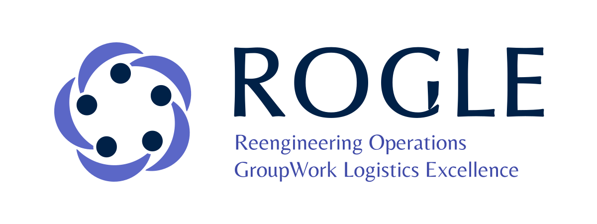
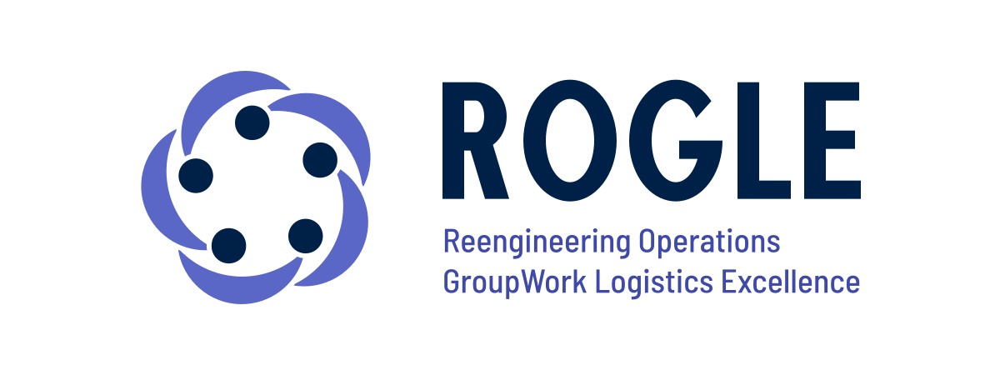
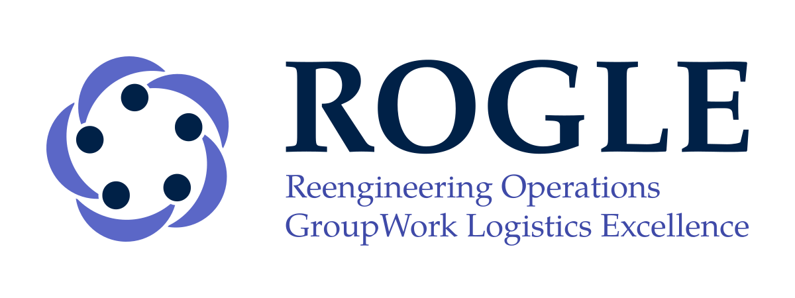
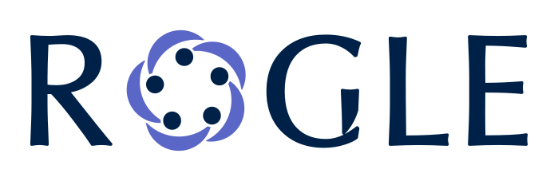
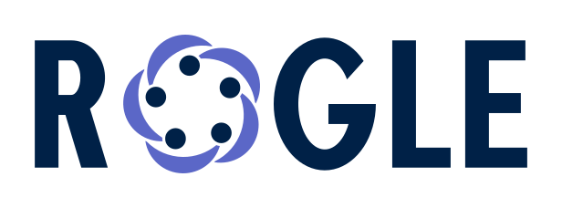
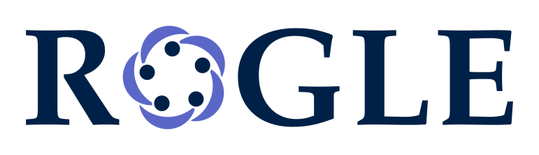
Todas las versiones de cada alternativa están en sus carpetas: alternativa-A/, alternativa-B/ y alternativa-C/. C se genera a partir de B con uv run brand/rediseno-20/build_alternativa_c.py. La lámina de A para la solicitud a la UPV está en rediseno-20/upv/. La votación del grupo está pendiente (#18).
Marca anterior (historial)
Hasta el 30 de septiembre de 2026 la marca fue un símbolo violeta con tipografía Inter. Se conserva en historial/violeta/ y en la etiqueta git marca-violeta. No se usa en piezas nuevas.
Decisiones tomadas
- Alternativa: A, por el momento (1 de octubre de 2026). Es reversible con
brand/adoptar.sh. La UPV aún no la ha aprobado. - Isotipo: cinco personas en corro, común a las tres alternativas.
- Tipografía: Palatino para texto y títulos (negrita) y Gill Sans solo para lo secundario, con fórmulas en Pagella. Una sola regla para documentos y presentaciones (registro).
- Siglas: el desarrollo oficial es el inglés, «Reengineering Operations GroupWork Logistics Excellence». «Reingeniería, Organización, trabajo en Grupo y Logística Empresarial» es su traducción.
- Año de creación: 2006, por decisión del usuario el 1 de octubre de 2026. El grupo cumple 20 años en 2026, no 25 como se creyó antes. La marca del aniversario lleva «20» y «since 2006».
- Versión impresa del 20 aniversario: las variantes «since» y el kit de imprenta usan medias lunas planas.
- Marca anterior: queda en el historial. La marca violeta ya no es vigente.
Pendientes
Cada pendiente tiene su issue en GitHub:
- #14: pedir la aprobación de A al Área de Comunicación de la UPV.
- #18: cerrar la votación del grupo.
- #22: marca UPV oficial en la firma institucional en negativo.
- #23: confirmar el valor en pantalla del Pantone 431. Ahora se usa
#5B6770. - #24: licencia de Futura para la firma institucional.
Los epics #13 (adoptar A), #20 (diseño), #26 (plantillas) y #32 (presentar la marca) siguen abiertos hasta cerrar sus pendientes.